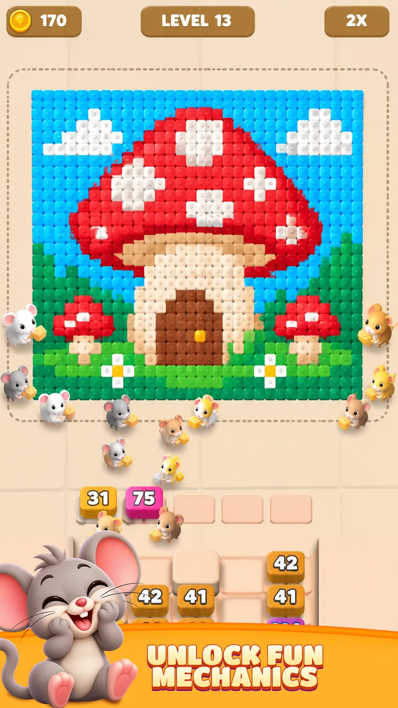

← All case studies


Mice Flow · Solo build
Shipping a whole game alone, with AI tools
Mice Flow is a voxel puzzle where a colony of mice eats a picture block by block. I built all of it myself: design, code, levels and 3D art. I used Claude and Codex as coding partners and Meshy for 3D models, then got it running at near 60 fps on a budget phone.
